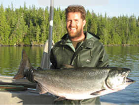
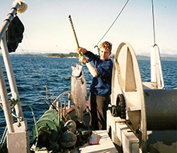
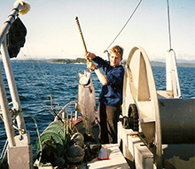

Blue Comet Seafoods is a family run business with skippers Tony and Sasha. Tony has fished for over 35 years and is still gillnetting aboard his freezer boat the “Blue Comet”. Sasha has been fishing for over 23 years and presently fishes aboard his boat the “Sleepless Nights”, a 40 ft gillnetter. The Pacific Shadow, a North Coast wood troller also fishes salmon, cod and tuna.
Our salmon is harvested along the British Columbia coast from the Haida Gwaii, Nass, Skeena and Bella Coola areas as well as Johnstone Straight, and Barkley Sound. We harvest wild sustainable seafood, dress and flash freeze our fish at sea, ensuring a premium quality product. We have been marketing our salmon for over 13 years at the Steveston Fisherman’s Wharf and for over 9 years at the Vancouver Farmer’s Markets.
Tony’s Story
I started fishing for salmon over 35 years ago. My first experience fishing was on board a seine boat in Alert Bay B.C.
 After a few years, I bought a classic 29 ft Sointula built double-ender gillnetter, the “Albatross II” and started my gillnetting career. I was what you would call a ‘local fisherman’ in that I was able to make a living fishing in Johnstone Strait and still be close to my home in Mitchell Bay. Some times my family and I would go fishing as far north as Rivers and Smiths Inlet when the runs were still very strong.
After a few years, I bought a classic 29 ft Sointula built double-ender gillnetter, the “Albatross II” and started my gillnetting career. I was what you would call a ‘local fisherman’ in that I was able to make a living fishing in Johnstone Strait and still be close to my home in Mitchell Bay. Some times my family and I would go fishing as far north as Rivers and Smiths Inlet when the runs were still very strong.
Ten years ago Sasha convinced me to install a flash freezer aboard the “Blue Comet”.
Our whole fishing style changed from volume to quality, with an emphasis on marketing/promoting our value added salmon products. We have been expanding our business and getting our family members involved in providing quality seafood to our valued customers.
Sasha’s Story
I started fishing with my dad when I was still in grade school.

We made short trips to Johnstone Strait. I remember being so excited cruising along the net just after dark counting the number of fish we caught, with the spotlight in my hand. I always thought I was the luckiest kid to have a summer job fishing on a boat where I got to see the whales and all the other sea life. I was still is high school when I got a job on the fish packer the ‘Mitchell Bay’, buying salmon from the local fishermen. It was a great job and it paid a better crew share than I was getting on my Dad’s boat. In the end I still wanted to fish my own boat so I worked hard and bought my first boat, the ‘Summer Wages’ at the age of 19.
At first I ran into alot of problems but luckily my Dad was always there to bail me out. I enjoy traveling up and down the coast each summer. Each season brings new opportunities in different fishing areas. A few years ago I bought my new boat the “Sleepless Nights”, appropriately named because soon after that my first son was born. I am really looking forward to the day when my wife will let me take our three kids out to deckhand with me and see the beautiful BC coast.

 



As soon as we started selling our flash frozen at sea salmon off my dad’s boat at Steveston Fisherman’s Wharf, we realized we were getting more and more customers who looked forward to purchasing our quality salmon.Many of our neighbours and friends wanted to buy fillets and smoked salmon and so we naturally started to sell our products at our neighbourhood Vancouver Farmer’s Markets. This was a realization that customers really want to support local fisherman who provide a variety of sustainable seafood products.